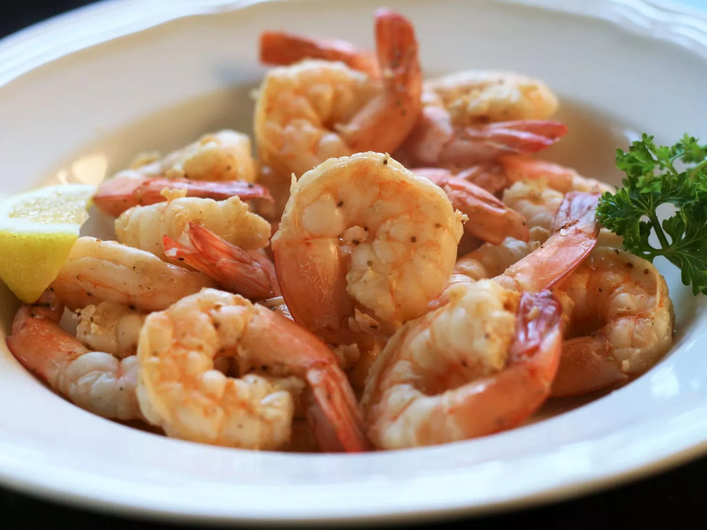

Old Bay Steamed Shrimp

Description
This is an easy to make steamed shrimp recipe that should only take about 20 min to make!
Ingredients
- Raw Shrimp
- Old Bay Seasoning
- Butter
Directions
- Bring water, vinegar, and seafood seasoning to a boil in a saucepan over high heat
- Add shrimp and stir
- Reduce heat to medium, cover, and steam, stirring once or twice, until bright orange in color, 3 to 5 minutes
- Drain